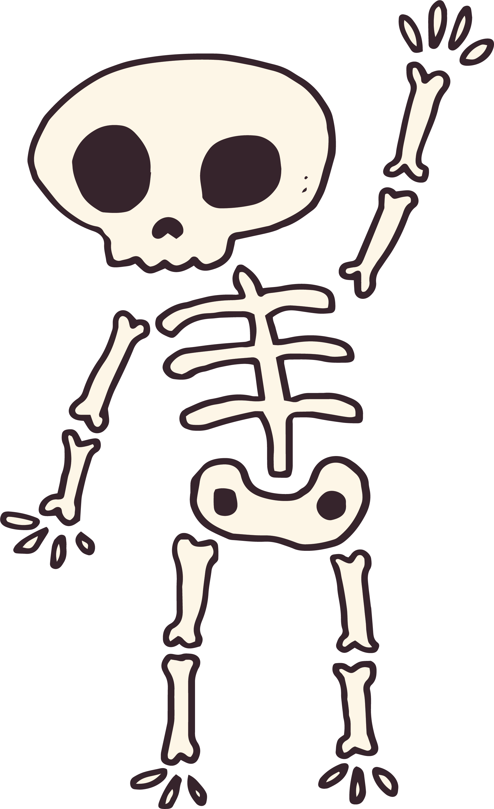

Приветствие
Доброго времени суток.
С помощью этой страницы можно перейти на 2 другие страницы "К списку заданий", где можно вызвать нажатием по кнопке выполнение скрипта.
И доп. страница с очень краткой информациоей "Обо мне"
P.S. Не смог красиво дополнить страницу выделениями текста и красивым оформлением,
т.к. курс является лишь беглым знакомством.
По этому поводу не стал погружаться с головой в изучение HTML, CSS и JS.

Доброго времени суток. С помощью этой страницы можно перейти на 2 другие страницы "К списку заданий", где можно вызвать нажатием по кнопке выполнение скрипта. И доп. страница с очень краткой информациоей "Обо мне"
P.S. Не смог красиво дополнить страницу выделениями текста и красивым оформлением, т.к. курс является лишь беглым знакомством. По этому поводу не стал погружаться с головой в изучение HTML, CSS и JS.